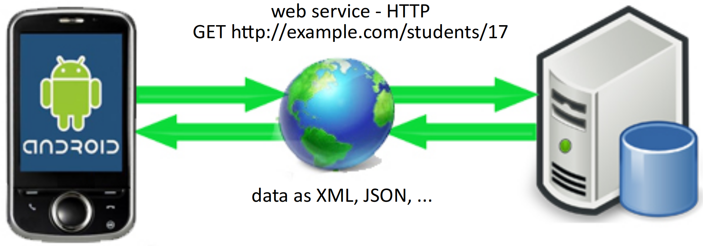
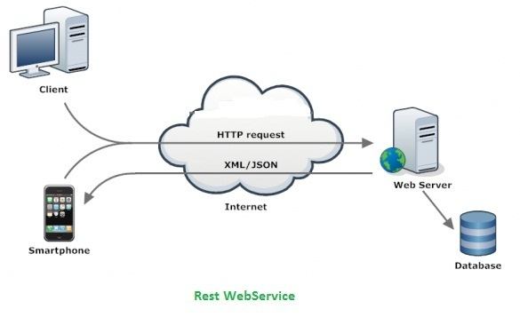
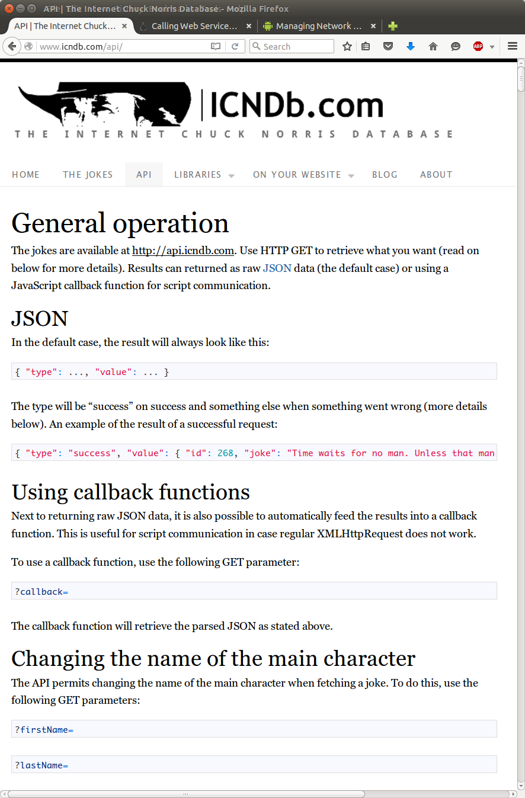
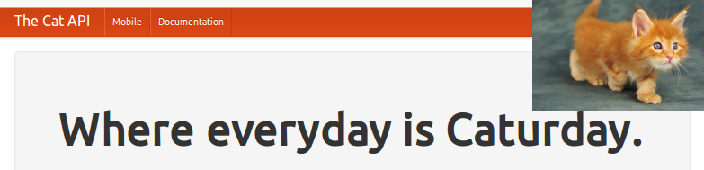
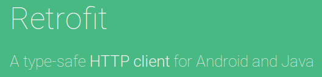

Web services to access data
- Many apps access data through a web layer.
- Client (app) makes queries by contacting certain specific URLs.
- Server (web URL) sends the appropriate database data back.
- Client parses the data, displays it, etc.

Web services
- web service: a set of functionality offered over a server using the web, but not web pages / HTML
- Use the web's HTTP protocol to connect and transfer data.
- Client connects to specific URLs to request specific data, which is then sent back in some documented format such as XML or JSON.
- REST: Representational State Transfer. Common style of web services.
- "RESTful web services" or "RESTful APIs"
 - Web services are a bit like remote function calls where you can request data via URLs with parameters and get the data returned as a response.
How to find and use web APIs

- Locate them online
- Google for phrases like "<company> REST API" or "<service> free API"
- Sign up for an account
- Many web APIs require a login or API key
- Register to receive key or account
- Read the online documentation to find out how the API works
- APIs are not standardized; each one is completely unique
- Need documentation to learn the available services, parameters, etc.
Data formats: JSON, XML
- Most web APIs return their data in one of these formats:
-
JSON: JavaScript Object Notation
- Data is a JavaScript object literal.
- JS objects are basically maps from keys to values.
- All values in the data are the fields of the object.
- Object can contain sub-objects, lists, strings, numbers, etc.
- Slightly less capable than XML, but simpler to read, write, parse.
- Currently most popular web data interchange format for most apps.
-
XML: Extensible Markup Language
- Data is a nested tree of tags and attributes.
- More structured, but bulkier/harder to parse.
- Very popular 5-10 years ago but being superseded by JSON.
-
Some web APIs use other data formats:
- YAML: Yet Another Markup Language. Popular in Ruby/Rails community.
- plain text (gasp!)
-
JSON data example
{
"private": "true",
"from": "Alice Smith (alice@example.com)",
"to": [
"Robert Jones (roberto@example.com)",
"Charles Dodd (cdodd@example.com)"
],
"subject": "Tomorrow's \"Birthday Bash\" event!",
"message": {
"language": "english",
"text": "Hey guys, don't forget to call me this weekend!"
}
}
JSON data annotated
↙ {...} = object document
{ ↓ key / ↓ value pairs
"private": "true", ← boolean
"from": "Alice Smith (alice@example.com)", ← string
"to": [ ← [] denotes an array
"Robert Jones (roberto@example.com)", ← array element 0
"Charles Dodd (cdodd@example.com)" ← array element 1
],
"subject": "Tomorrow's \"Birthday Bash\" event!",
"message": { ← {...} = a nested object
"language": "english",
"text": "Hey guys, don't forget to call me this weekend!"
}
}
Chuck Norris REST API
- fetches random Chuck Norris quotes and "Facts" in JSON format
- http://www.icndb.com/api/
-
login/key required? NO

- API: http://api.icndb.com/ ________
- /jokes/random - fetch a random joke
- { "type": "success", "value": { "id": 194, "joke": "Chuck Norris kicked cancer.", "categories": [] } }
- /jokes/random/N - fetch multiple random jokes
- { "type": "success", "value": [ { "id": 417, "joke": "..." }, { "id": 505, "joke": "...", "categories": ["nerdy"] }, { "id": 291, "joke": "...", "categories": [] } ] }
- /jokes/random/limitTo=[categories] - limit categories of joke
- /jokes/random/exclude=[categories] - exclude categories of joke
- /jokes/N - fetch a specific joke with ID #N
- { "type": "success", "value": { "id": 194, "joke": "Chuck Norris kicked cancer.", "categories": [] } }
- /jokes/count - fetch total number of jokes
- { "type": "success", "value": 549 }
- /categories - fetch names of all categories of jokes
- { "type": "success", "value": [ "nerdy", "explicit", "chuck norris", "bruce schneier" ] }
- /jokes/random - fetch a random joke
Parsing JSON data
JSONObject methods (link)
| Method | Description |
|---|---|
j.get("key") j.getBoolean("key") j.getDouble("key") j.getInt("key") j.getJSONArray("key") j.getJSONObject("key") j.getLong("key") j.getString("key") |
retrieve value of the given key, or throw a JSONException if key is not found |
j.has("key") |
return true if given key maps to a value |
j.isNull("key") |
return true if given key maps to null |
j.keys() |
return iterator of all keys in object |
j.opt("key", default) j.optBoolean("key", default) ... |
retrieve value of the given key, or return default if key is not found |
j.put("key", value); |
set the value for a given key |
j.remove("key"); |
removes key/value mapping if it exists |
j.toString() j.toString(spaces)
|
convert JSON object to a string, with optional indentation and spacing |
JSONObject.quote(str) |
encodes data as a JSON string |
Fetching web data, no library
// fetch REST API data in the background without any libraries (ick!)
public void fetchData(String urlString) {
Thread thread = new Thread(new Runnable() {
public void run() {
try {
URL url = new URL(urlString); // connect to the site
HttpURLConnection conn = (HttpURLConnection) url.openConnection();
conn.setConnectTimeout(30000); // milliseconds
conn.setReadTimeout(10000);
conn.setRequestMethod("GET");
conn.connect();
int responseCode = conn.getResponseCode(); // HTTP result codes; 200=success
if (responseCode == HttpURLConnection.HTTP_OK) {
InputStream input = conn.getInputStream(); // read data from URL to string
StringBuilder sb = new StringBuilder();
while (true) {
int ch = input.read();
if (ch == -1) break;
sb.append((char) ch);
}
String text = sb.toString();
processData(text); // you write this!
} else {
Log.d("url", "HTTP fail, code " + responseCode); // request failed
}
} catch (IOException ioe) {
Log.wtf("url", ioe);
}
}
});
thread.start();
}
Updating widgets in thread
- Code in a background thread cannot modify UI widgets.
- The code will throw an exception.
- Widgets must be updated in Android's UI thread.
final TextView textView = (TextView) findViewById(R.id.id);textView.setText(myJsonText);// will throw exception - Simplest way to update a widget (without libraries): call
postmethod, pass aRunnablecontaining code to run:// update a UI widget in a background thread textView.post(new Runnable() { public void run() { textView.setText(joke); } });
Fetching web data, Ion library
// fetch REST API data in background with Ion library (yay!)
public void fetchData(String urlString) {
Ion.with(context)
.load("urlString")
.asString()
.setCallback(new FutureCallback<String>() {
public void onCompleted(Exception e,
String data) {
// process the data or error
JSONObject json = new JSONObject(data);
processData(json); // you write this!
}
});
}
The Cat API

- facts/photos of cats in XML / HTML
- http://thecatapi.com/docs.html
- login/key required? OPTIONAL
- API: http://thecatapi.com/ ________
- /api/images/get?param=val¶m=val - fetch a random cat picture
- image_id=ID specific image ID
- format=format format of data to return: xml, html, or src [default xml]
- results_per_page=N number of images to send back [default 1]
- category=cat category of images [default none]
- size=size size: small, med, or full [default full]
- example: http://thecatapi.com/api/images/get?format=xml&size=med&results_per_page=3
- /api/images/vote - score an image from 1-10
- api_key=key API key (required)
- image_id=ID ID of image to vote on (required)
- score=N score from 1-10 (required)
- example: http://thecatapi.com/api/images/vote?api_key=xxxxx&image_id=bC24&score=8
- /api/images/getvotes - return all votes made by your API key
- api_key=key API key (required)
- /api/categories/list - get list of all active image categories
- { "type": "success", "value": 549 }
- /api/images/get?param=val¶m=val - fetch a random cat picture
XML data example
<?xml version="1.0" encoding="UTF-8"?>
<note private="true">
<from>Alice Smith (alice@example.com)</from>
<recipients>
<to>Robert Jones (roberto@example.com)</to>
<to>Charles Dodd (cdodd@example.com)</to>
</recipients>
<subject>Tomorrow's "Birthday Bash" event!</subject>
<message language="english" format="text">
Hey guys, don't forget to call me this weekend!
</message>
</note>
XML data annotated
<?xml version="1.0" encoding="UTF-8"?> ← XML prolog
<note private="true"> ← document node
<from>Alice Smith (alice@example.com)</from>
↖ tag (or element) ↖ text content
<recipients>
<to>Robert Jones (roberto@example.com)</to>
<to>Charles Dodd (cdodd@example.com)</to>
</recipients>
<subject>Tomorrow's "Birthday Bash" event!</subject>
↙ attributes ↘
<message language="english" format="text">
Hey guys, don't forget to call me this weekend!
</message>
</note>
XML Cat data example
<!-- http://thecatapi.com/api/images/get?format=xml&size=med&results_per_page=3 -->
<?xml version="1.0"?>
<response>
<data>
<images>
<image>
<url>http://24.media.tumblr.com/tumblr_m27fatL9PD1qzex9io1_500.jpg</url>
<id>2eo</id>
<source_url>http://thecatapi.com/?id=2eo</source_url>
</image>
<image>
<url>http://27.media.tumblr.com/tumblr_m1o0ai1nI31qzex9io1_500.jpg</url>
<id>21m</id>
<source_url>http://thecatapi.com/?id=21m</source_url>
</image>
<image>
<url>http://25.media.tumblr.com/tumblr_m18j7miQoo1r94vvxo1_500.jpg</url>
<id>do0</id>
<source_url>http://thecatapi.com/?id=do0</source_url>
</image>
</images>
</data>
</response>
JSON Cat data example
// http://thecatapi.com/api/images/get?format=json&size=med&results_per_page=3
{
"response": {
"data": {
"images": {
"image": [
{ "url": "http://27.media.tumblr.com/tumblr_m27fatL9PD1qzex9io1_500.jpg",
"id": "sm",
"source_url": "http://thecatapi.com/?id=sm" },
{ "url": "http://25.media.tumblr.com/tumblr_m1o0ai1nI31qzex9io1_500.jpg",
"id": "5tv",
"source_url": "http://thecatapi.com/?id=5tv" },
{ "url": "http://25.media.tumblr.com/tumblr_m18j7miQoo1r94vvxo1_500.jpg",
"id": "b0f",
"source_url": "http://thecatapi.com/?id=b0f" }
]
}
}
}
}
Converting XML to JSON
// how to fetch REST API data in a background thread
// and convert it from XML to JSON format
// using Stanford Android lib and Ion web library
public void fetchData(String urlString) {
Ion.with(context)
.load(urlString)
.asString()
.setCallback(new FutureCallback<String>() {
public void onCompleted(Exception e,
String data) {
JSONObject json = XML.toJSONObject(data);
processData(json); // you write this!
}
});
}
Library quick look: GSON
- GSON library maps JSON → Java objects
- https://github.com/google/gson
- The idea: Create classes to match JSON data, then use GSON to unpack JSON into object.
- in build.gradle:
compile 'com.google.code.gson:gson:2.8.0'
public class BankAccount { private int id; private String name; private double balance; public BankAccount() {} } ... String json = "{\"id\":1234,\"name\":\"Marty\",\"balance\":0.25}"; Gson gson = new Gson(); BankAccount acct = gson.fromJson(json, BankAccount.class);
Library quick look: Retrofit

- Retrofit library maps REST APIs to methods
- http://square.github.io/retrofit/
- The idea: Instead of writing code in potentially multiple places to fetch and unpack the data from REST APIs, declare special methods that map to REST endpoints.
- in build.gradle:
compile 'com.squareup.retrofit2:retrofit:2.1.0'
Retrofit code example
// example that uses Retrofit with Chuck Norris API
public interface ChuckNorrisAPI {
@GET("/jokes/random")
Call<String> randomJoke(); // API /jokes/random => randomJoke() method
@GET("/jokes/random/{num}")
Call<String[]> allRandomJokes(@Path("num") int num);
}
...
Retrofit retrofit = new Retrofit.Builder()
.baseUrl("http://api.icndb.com")
.addConverterFactory(GsonConverterFactory.create())
.build();
ChuckNorrisAPI chuck = retrofit.create(ChuckNorrisAPI.class);
Call<String> joke = chuck.randomJoke(); ...
Other cool APIs
- Wikipedia
- Yo
- Trivia game
- ... and many more!